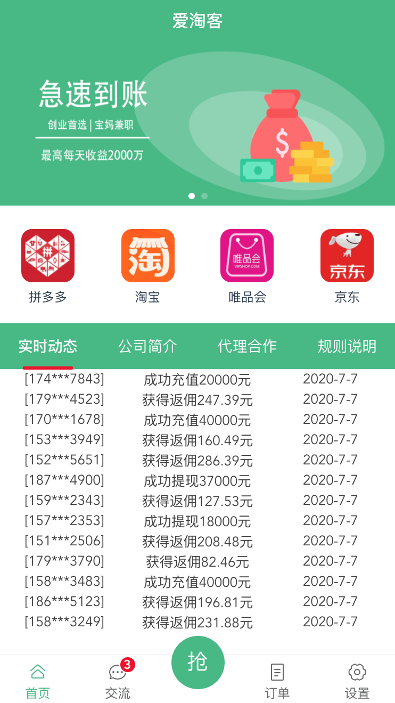
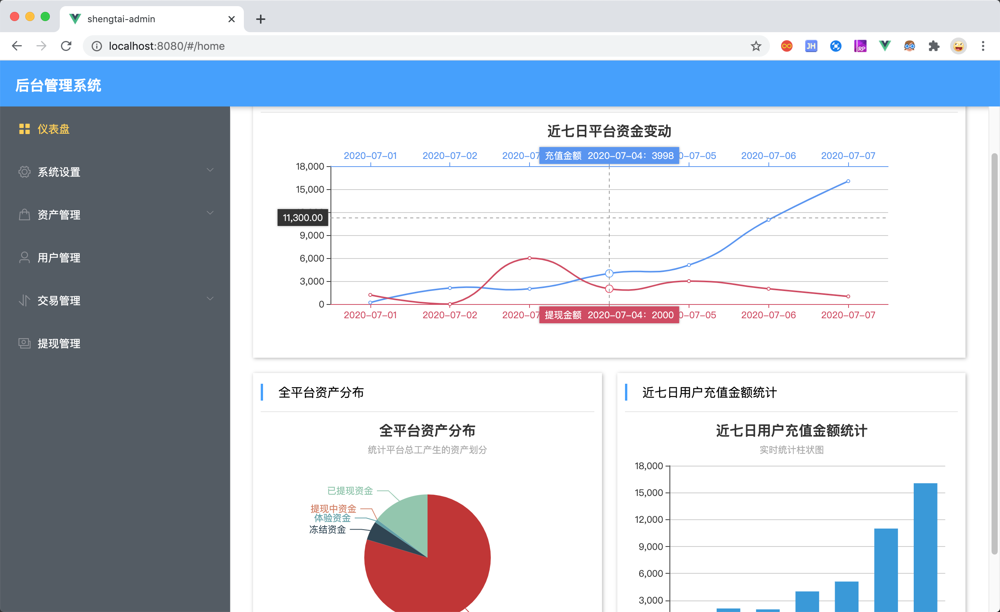

與其臨淵羨魚, 不如退而結網
-
說明
這是壹個刷單APP的程式展示和搭建教程, 因技術購買方拒絕支付尾款, 故此本人收回授權並將該程式公布.
任何人通過該程式即可搭建屬於自己的"刷單平臺", 並且內置支付渠道和聊天室.
下面是APP程式預覽畫面:

下面是後臺程式預覽畫面:

-
程式搭建過程
-
1. 點擊這裏下載程式文件, 程序文件包含服務器程式, APP程式, 後臺程式
-
2. 將程式文件上傳到妳的伺服器並解壓. 此後安裝JAVA環境和MYSQL服務器
-
3. 創建數據庫, 並將shuadan.sql導入到數據庫中
-
4. 啟動服務器程式: java nohup -jar [服務器程式文件] --Dspring.database.url=[妳的數據庫地址] --Dspring.database.username=[妳的數據庫用戶名] --Dspring.database.password=[妳的數據庫密碼]
-
5. 此時程式所用收款渠道並非妳的渠道, 聯系飛機號@guosk, 獲得屬於自己的支付渠道並按照要求配置.
-
6. 此時程式所用收款渠道並非妳的渠道, 聯系飛機號@guosk, 獲得屬於自己的支付渠道並按照要求配置.
-
7. 使用NGINX代理APP程式和後臺程式, 全局搜索"localhost"更改為妳的伺服器地址
-
8. 登錄後臺程式,默認賬號密碼為18888888888, 123123, 登陸後重新上傳商品圖片, 並對妳的APP程式進行個性設置
-
9. 使用Hbuilder將APP程式編譯成Android APP, 使用Apple Configurator將APP程式編譯成IOS APP
-
10. 完成搭建, 可以收錢了
如果妳需要幫助, 或者無法自己完成網站建設, 可以通過Telegram聯系我, 賬號為@guosk.